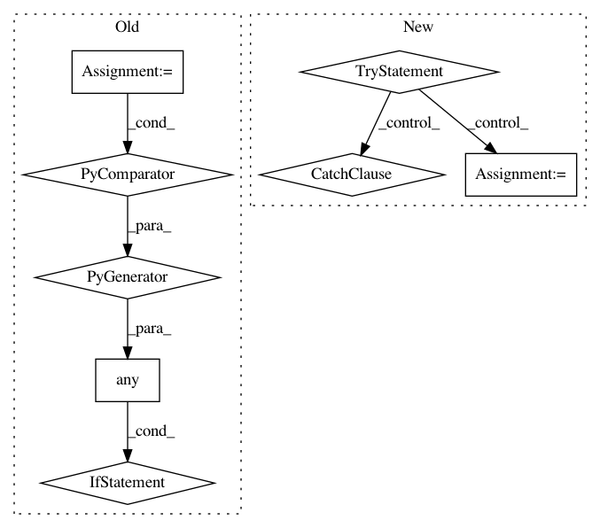

d23794e515aac062b94c9e492143d97ec55c9cc9,src/pyscenic/cli/pyscenic.py,,aucell_command,#Any#,172
Before Change
LOGGER.info("Loading expression matrix.")
ex_mtx = _load_expression_matrix(args)
if any(args.regulons_fname.name.endswith(ext) for ext in FILE_EXTENSION2SEPARATOR.keys()):
LOGGER.info("Creating regulons.")
regulons = _df2regulons(args.regulons_fname.name)
elif args.regulons_fname.name.endswith(".gmt"):
LOGGER.info("Loading regulons.")
regulons = GeneSignature.from_gmt(args.regulons_fname.name,
field_separator="\t", gene_separator="\t")
else:
LOGGER.info("Loading regulons.")
regulons = _load_modules(args.regulons_fname.name)
LOGGER.info("Calculating enrichment.")
auc_heatmap = aucell(ex_mtx, regulons, auc_threshold=args.auc_threshold,
noweights=args.weights != "yes", num_workers=args.num_workers)
After Change
Calculate regulon enrichment (as AUC values) for cells.
LOGGER.info("Loading expression matrix.")
try:
ex_mtx = load_exp_matrix(args.expression_mtx_fname.name, (args.transpose == "yes"))
except ValueError as e:
LOGGER.error(e)
sys.exit(1)
LOGGER.info("Loading gene signatures.")
try:
signatures = load_signatures(args.signatures_fname.name)
except ValueError as e:
In pattern: SUPERPATTERN
Frequency: 3
Non-data size: 8
Instances
Project Name: aertslab/pySCENIC
Commit Name: d23794e515aac062b94c9e492143d97ec55c9cc9
Time: 2018-12-14
Author: vandesande.bram@gmail.com
File Name: src/pyscenic/cli/pyscenic.py
Class Name:
Method Name: aucell_command
Project Name: aertslab/pySCENIC
Commit Name: 0e6804ca93a4f76300134a126d5942114b71901c
Time: 2018-12-14
Author: vandesande.bram@gmail.com
File Name: src/pyscenic/cli/pyscenic.py
Class Name:
Method Name: prune_targets_command
Project Name: chainer/chainercv
Commit Name: 5e01619e1f495db4ce7201c1444a66fbf46059c4
Time: 2019-02-23
Author: ktns.87@gmail.com
File Name: chainercv/links/model/pickable_sequential_chain.py
Class Name: PickableSequentialChain
Method Name: pick